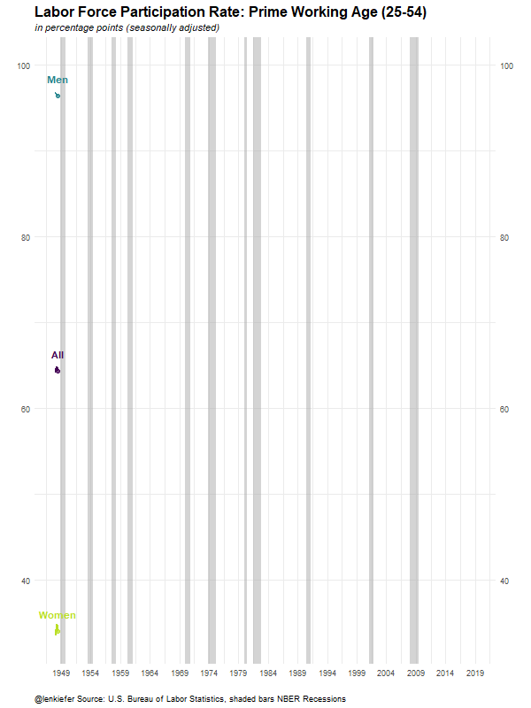

Here’s some R code for an animated chart of the U.S. prime working age (25-54) labor force participation rate. I tweeted it out last Friday:
Labor force participation rate #dataviz made with #rstats #gganimate pic.twitter.com/uSICoLjbIf
— 📈 Len Kiefer 📊 (@lenkiefer) February 1, 2019
We can go to the U.S. Bureau of Labor Statistics (BLS) webpage (https://www.bls.gov/) and get these data. For more details see my post Charting Jobs Friday with R.
For an interesting analysis of what might have been behind the trends in this chart, see this paper The Rise of Working Mothers and the 1975 Earned Income Tax Credit that Jacob Bastian (on Twitter atJacobBastian25) shared in response to my tweet.
Get data
Click for R code to wrangle data
# load libraries ----
library(data.table)
library(tidyverse)
library(gganimate)
# create a data frame for recessions ----
recessions.df = read.table(textConnection(
"Peak, Trough
1948-11-01, 1949-10-01
1953-07-01, 1954-05-01
1957-08-01, 1958-04-01
1960-04-01, 1961-02-01
1969-12-01, 1970-11-01
1973-11-01, 1975-03-01
1980-01-01, 1980-07-01
1981-07-01, 1982-11-01
1990-07-01, 1991-03-01
2001-03-01, 2001-11-01
2007-12-01, 2009-06-01"), sep=',',
colClasses=c('Date', 'Date'), header=TRUE)
# get data from bls (with data.table::fread)
dfs<-fread("https://download.bls.gov/pub/time.series/ln/ln.series")
codes<-dfs[grepl("Participation Rate", series_title) & # use regular expression
ages_code==33 & # only ags 25 to 54
periodicity_code =="M" & # only monthly frequence
seasonal=="S" # only Seasonally adjusted
]
codes$var <- c("All","Men","Women")
codes <- select(codes, series_id, series_title, var)
# get all data (large file)
df.all<-fread("https://download.bls.gov/pub/time.series/ln/ln.data.1.AllData")
# filter data
dfp<-df.all[series_id %in% codes$series_id,]
#create date variable
dfp[,month:=as.numeric(substr(dfp$period,2,3))]
dfp$date<- as.Date(ISOdate(dfp$year,dfp$month,1) ) #set up date variable
dfp$v<-as.numeric(dfp$value)
# join on variable names, drop unused variables, convert to data.table
dfp <-
left_join(dfp, select(codes, series_id,series_title,var), by="series_id") %>%
select(series_id,series_title,var,date,v) %>% data.table() Make a static plot
Click for R code to make plot
g_lfp0 <-
ggplot(data=dfp, aes(x=date,y=v,color=var, label=var))+
geom_rect(data=recessions.df, inherit.aes=F,
aes(xmin=Peak, xmax=Trough, ymin=-Inf, ymax=+Inf), fill='darkgray', alpha=0.5) +
geom_line(size=1.05)+theme_minimal()+
geom_point(data=filter(dfp,date==max(dfp$date)),size=2,alpha=0.75)+
geom_text(data=filter(dfp,date==max(dfp$date)),fontface="bold",size=4,nudge_y=2)+
scale_color_viridis_d(end=0.9)+
scale_x_date(date_breaks="5 years",date_labels="%Y")+
scale_y_continuous(sec.axis=dup_axis())+
theme(legend.position="none",
plot.caption=element_text(hjust=0),
plot.subtitle=element_text(face="italic"),
plot.title=element_text(size=16,face="bold"))+
labs(x="",y="",title="Labor Force Participation Rate: Prime Working Age (25-54)",
subtitle="in percentage points (seasonally adjusted)",
caption="@lenkiefer Source: U.S. Bureau of Labor Statistics, shaded bars NBER Recessions")g_lfp0
Animate
Finally, the following code will turn our static plot (with a minor tweak) into an animated gif. See my post Go Go Animate! for more on making animations with the gganimate package.
Click for R code to make animation
g_lfp <-
ggplot(data=dfp, aes(x=date,y=v,color=var, label=var))+
geom_rect(data=recessions.df, inherit.aes=F,
aes(xmin=Peak, xmax=Trough, ymin=-Inf, ymax=+Inf), fill='darkgray', alpha=0.5) +
geom_line(size=1.05)+theme_minimal()+
scale_color_viridis_d(end=0.9)+
# note to get the labels to show up we remove the filter from the data part of geom_point/geom_text
geom_point(size=2,alpha=0.75)+
geom_text(fontface="bold",size=4,nudge_y=2)+
scale_x_date(date_breaks="5 years",date_labels="%Y")+
scale_y_continuous(sec.axis=dup_axis())+
theme(legend.position="none",
plot.caption=element_text(hjust=0),
plot.subtitle=element_text(face="italic"),
plot.title=element_text(size=16,face="bold"))+
labs(x="",y="",title="Labor Force Participation Rate: Prime Working Age (25-54)",
subtitle="in percentage points (seasonally adjusted)",
caption="@lenkiefer Source: U.S. Bureau of Labor Statistics, shaded bars NBER Recessions")
anim_save(file="PATH_TO_YOUR_DIRECTORY/lfp2.gif",
animation = animate(g_lfp+transition_reveal(date),
height=800,width=600,
end_pause=25,nframes=125))Running the code above yields:
